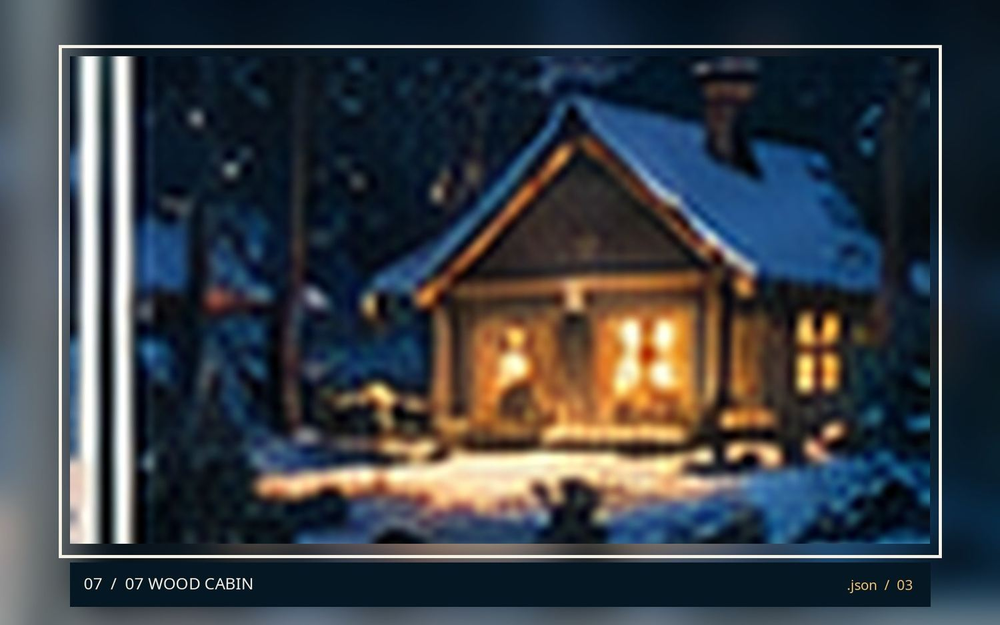
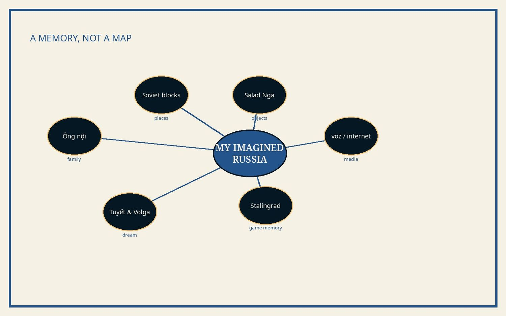

Về những giấc mơ, ký ức mượn và một nước Nga chưa từng sống ở đó.
All black. Yellow beanie. A mind full of impossible colours. Gấu walks beside the dream—not as a claim about an actual journey.
ĐỌC CHƯƠNG →EXPLORE MEMORY →01 / THE ORIGINAL ESSAY
This chapter describes Jason's remembered impressions. Videogame scenes are not historical documentary evidence; the quoted dialogue requires source verification before commercial use.
A fictional map of memory, assembled from the essay's own ingredients: stories, Soviet architecture, childhood gaming, online travel diaries, winter imagery. Click one node to revisit that layer; there are no invented probabilities or location claims.


03 / AN ILLUSTRATED MEMORY ARCHIVE
Illustrated storyboard with original synthesized ambience only. Not a narrated TikTok/YouTube Short. No claim that these events were filmed.